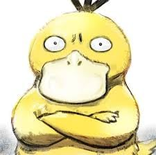
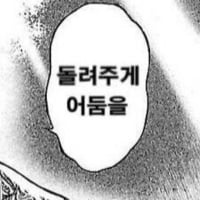

설마 이시간에 일찍 일어났다고
이불속에서 뒹굴거리면서 개드립
보는건 아니지? 오늘은 월요일이야
일요일이 아니라구. 어서 개드립 끄고
출근 준비해!

설마 이시간에 일찍 일어났다고
이불속에서 뒹굴거리면서 개드립
보는건 아니지? 오늘은 월요일이야
일요일이 아니라구. 어서 개드립 끄고
출근 준비해!
야간 근무야!
졸음운전하지 말고 안전운전해 개붕아
고마워!
근데 대중교통으로 출퇴근이야!
난 365일이 휴일이야
신생아 재우는 중이에요..
산후조리원 다시 가고 싶어요..

산후조리원에서는 2시간반~3시간마다 먹던 친구가 집에 오니까 2시간마다 먹을려고 해요..이거 괜찮나요
원래 그래요
다행이네요
힘내 나도 4개월된 애기랑 같이있어
일찍 일어나긴! 안잔거라고!
오늘의 변형 속담: 밤을 샌 새가 일찍 일어나는
새것도 포식한다 어쩌구
출근버스 안이야 ㅅㅂ
빨기 재밌는거 올려줘
이미 출근햇다...


자택경비야!
곧 퇴근 하는데 봐줘잉~
회사에서 보는중이얌
연차지롱
출근했어!!
어 이직준비중이라 개백수야 ~ 출근안해
새벽 3시에 나왔어....
이미 출근해서 컴퓨터 켜 놓고 읽는 중이니까 봐줘라
이미 회사야...
난 아침에 퇴근해
일 안해!